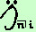
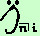

|
E' sempre possibile passare dal valore di una rendita calcolato in una certa data a quello relativo ad una data diversa: si tratta di spostare nel tempo il valore della rendita come abbiamo gia' visto Quindi se abbiamo il montante di una rendita, fra n anni ha il valore  potremo trovarne il valore attuale spostandola indietro nel tempo per n anni, cioe' potremo trovarne il valore attuale spostandola indietro nel tempo per n anni, cioe'
 = ·vn = ·vn
e vale anche  =  ·vn =  ·vn
Similmente potremo trovare il valore della rendita s anni prima della scadenza (essendo s minore di n) calcolando similmente se abbiamo il valore attuale di una rendita posticipata potremo trovarne il montante all'atto dell'ultimo versamento spostandola avanti nel tempo per n anni, cioe'
= ·un
e vale anche ·un
Similmente potremo trovare il valore della rendita posticipata dopo s anni (essendo s minore di n) calcolando |

|

|

|

|